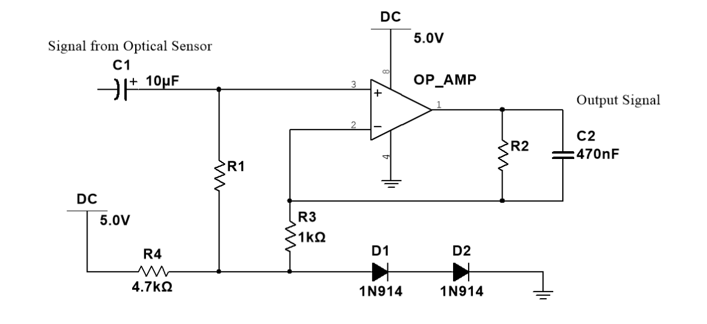
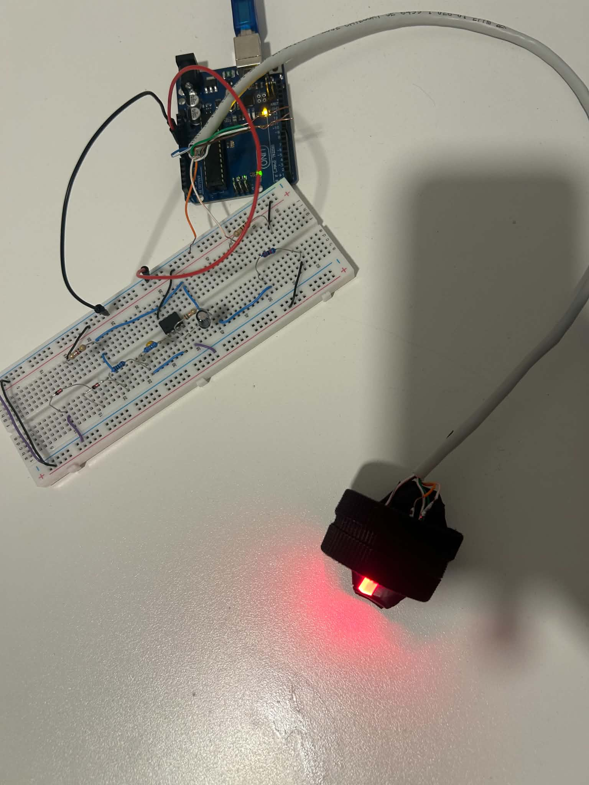
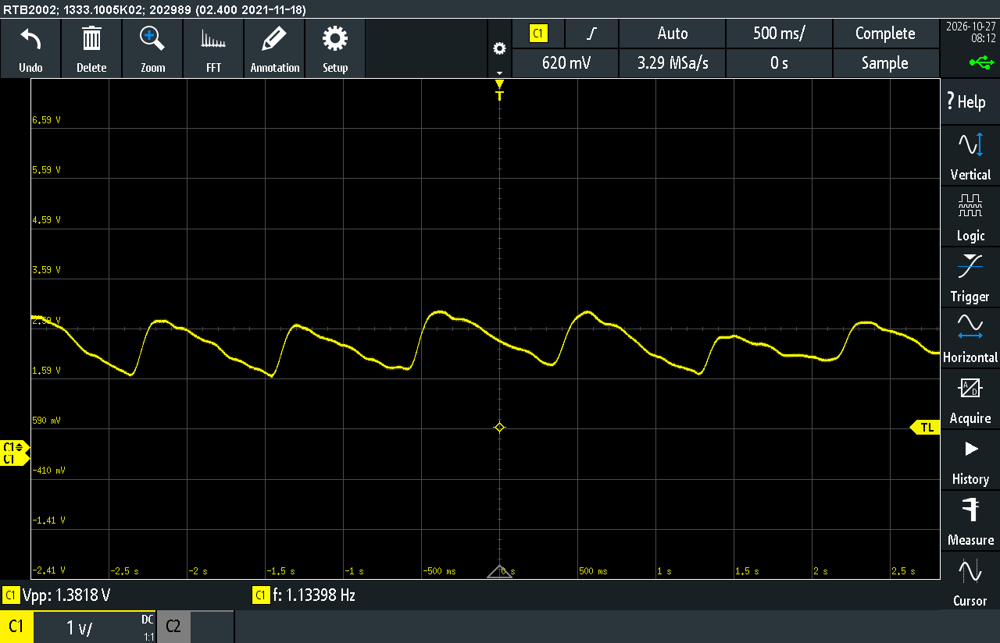

ANALOG ELECTRONICS / BIOMEDICAL INSTRUMENTATION
Designed and constructed a pulse oximeter using red and infrared LEDs, photodetection and analogue signal conditioning to measure pulse rate and estimate peripheral blood oxygen saturation (SpO₂).
Developed a pulse oximeter to investigate the principles of photoplethysmography (PPG) and non-invasive blood oxygen saturation measurement.
The system uses red and infrared light to measure changes in light absorption caused by pulsatile blood flow. These optical measurements are processed to extract the AC and DC signal components required for estimating blood oxygen saturation.
The pulse oximeter consists of several interconnected electronic components responsible for optical sensing, analogue signal processing and measurement.

The analogue front-end was constructed using an LM358 operational amplifier, with amplification and filtering stages designed to extract the small pulsatile component from the photodetector output.
Red and infrared LED measurements were acquired separately, allowing the corresponding optical signals to be analysed and compared.

Oscilloscope measurements and recorded waveforms were used to examine the amplified photoplethysmography signal and evaluate the performance of the analogue signal conditioning circuit.
The AC and DC components of the red and infrared measurements were used to calculate the ratio of ratios, forming the basis for SpO₂ estimation.

Analog Electronics · LM358 Operational Amplifier · Arduino · Python · Photoplethysmography · Signal Conditioning · Oscilloscope